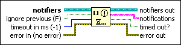

Wait on Notification from Multiple Function
Owning Palette: Notifier Operations Functions
Requires: Base Development System
Waits until at least one of the notifiers you specify receives a message.
When one of the notifiers receives a message, this function continues to execute. Use the Send Notification function to send the message. If a notifier reference becomes invalid, such as when another function closes it, this function stops waiting and returns error code 1122. If the notifier does not contain a message, this function waits until the notifier receives a message.

 Add to the block diagram Add to the block diagram |
 Find on the palette Find on the palette |